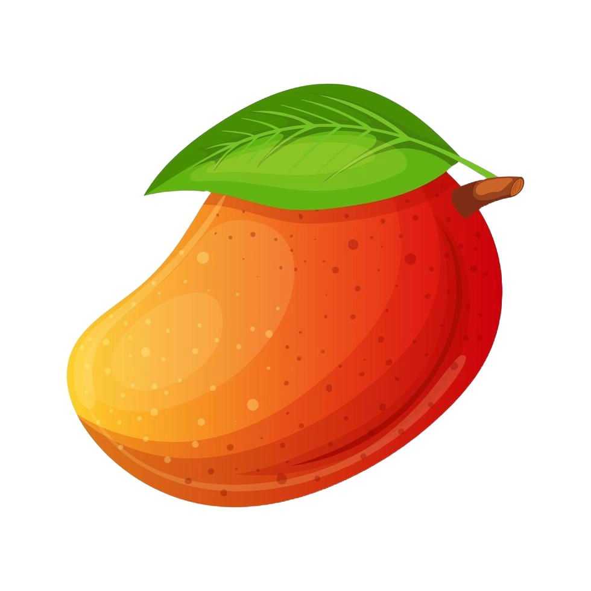
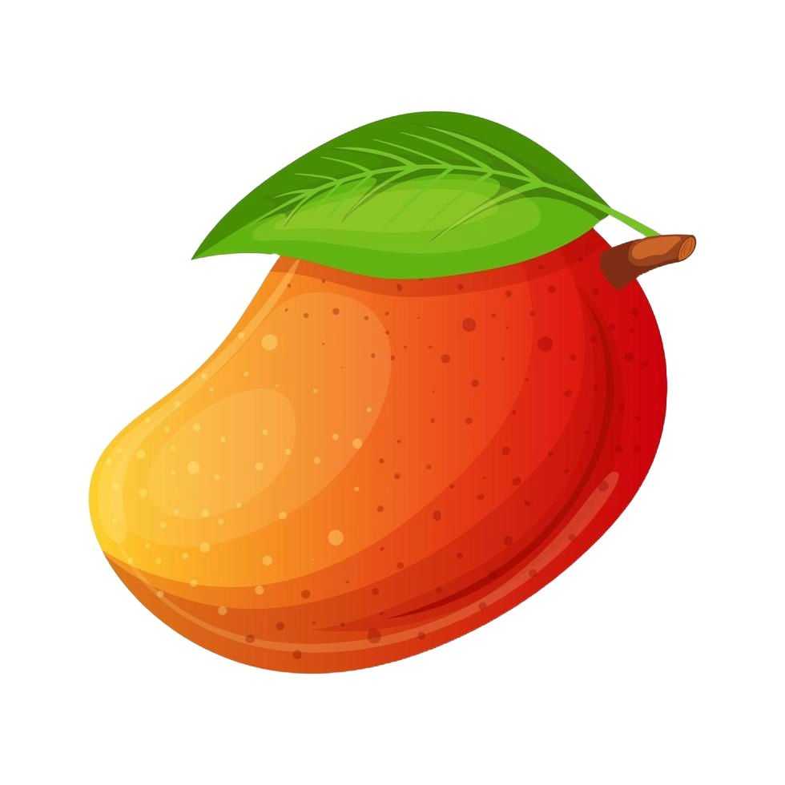
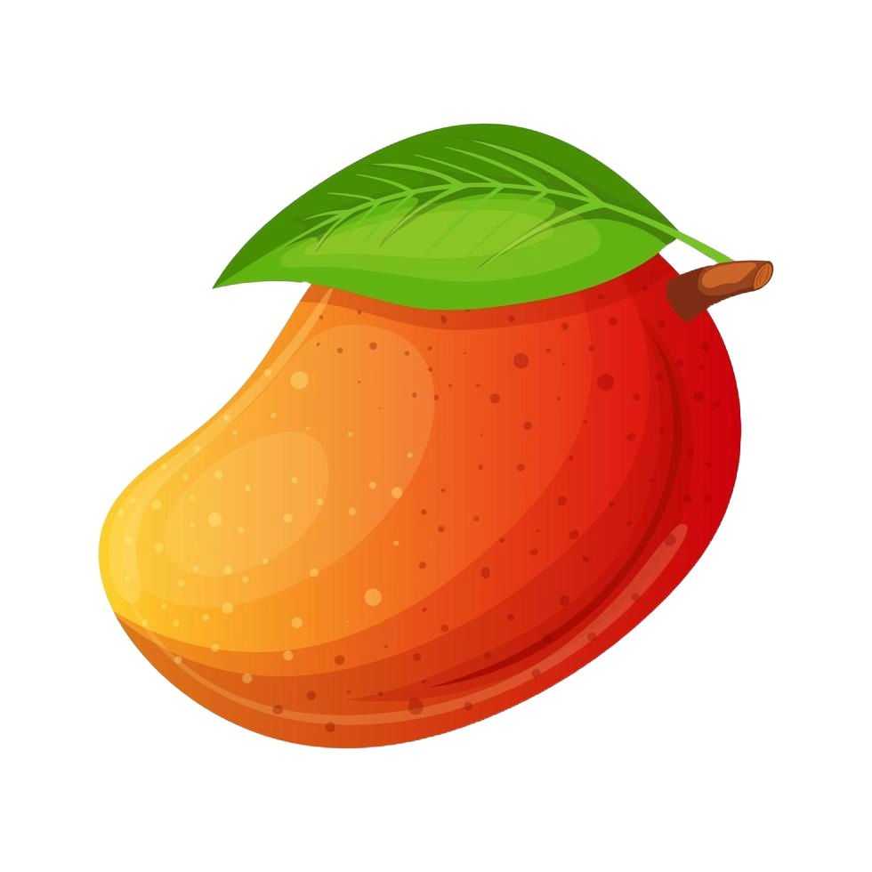

 : 0 | : 5
 : 0 | : 5
Benvingut/Benvinguda a "Cientifiks en joc: Fruit Catcher (Brasil)".
Instruccions: La teva tasca és recollir fruites mentre evites perdre vides. Comences amb 5 vides, si cau alguna fruita al terra perds 1 vida i si arribes a 0 perds. Per guanyar has de recollir 50 fruites, això sí, la dificultat va augmentant a mesura que vas recol·lectant les fruites i també canvia el tipus d'aquestes. Sortiran papaies, plàtans i mànecs. Utilitza les tecles de fletxa esquerra i dreta per moure la cistella i atrapar totes les fruites que puguis.
 : 0 | : 5